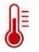
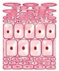
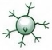

Reduced
inflammation
Helps soothe and
calm reactive skin.
01 · Inflammation

HeatTrevionTM inhibits TRPV1 and TRPA1
Strong Dual Inhibition
Keratinocyte
Response
(restored)


AcetylcholineTRPV1, transient receptor potential vanilloid 1; TRPA1, transient receptor potential ankyrin 1;
ACh, acetylcholine; cHPA, corticotropin–releasing hormone–pituitary–adrenal.
Six benefit areas organized into a concise two-row web layout.
Helps soothe and
calm reactive skin.
01 · Inflammation
Supports a balanced
and adaptive skin
immune response.
02 · Immune Balance
Helps reduce visible
redness and
sensitivity.
03 · Calmer Skin
Strengthens skin
barrier for enhanced
protection.
04 · Barrier Support
Helps buffer the impact
of stress on the skin.
05 · Stress-Related
Promotes healthy-looking,
comfortable, and
resilient skin.
06 · Comfort & Resilience
Skin Comfort · Immune Balance · Barrier Resilience · Well-Being
Support-oriented benefit language retained from the supplied Trevion™ material.